Кошка — одно из наиболее популярных «животных-компаньонов».
С точки зрения научной систематики, домашняя кошка — млекопитающее семейства кошачьих отряда хищных. Ранее домашнюю кошку нередко рассматривали как отдельный биологический вид. С точки зрения современной биологической систематики домашняя кошка (Felis silvestris catus) является подвидом лесной кошки (Felis silvestris).
Являясь одиночным охотником на грызунов и других мелких животных, кошка — социальное животное, использующее для общения широкий диапазон звуковых сигналов, а также феромоны и движения тела.
В настоящее время, в мире насчитывается около 600 млн домашних кошек, выведено около 200 пород, от длинношёрстных (персидская кошка) до лишённых шерсти (сфинксы), признанных и зарегистрированных различными фелинологическими организациями.
На протяжении 10 000 лет кошки ценятся человеком, в том числе за способность охотиться на грызунов и других домашних вредителей.
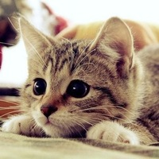 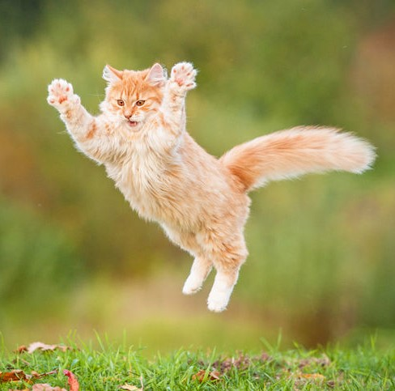 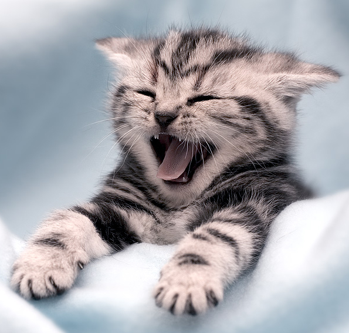
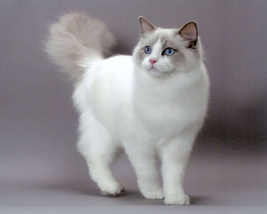 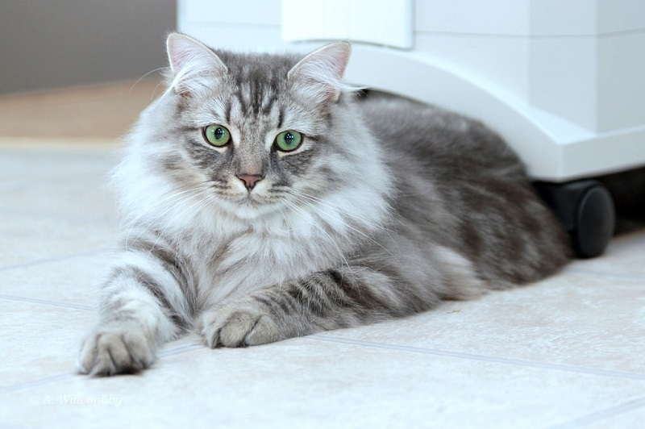
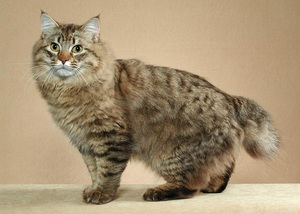 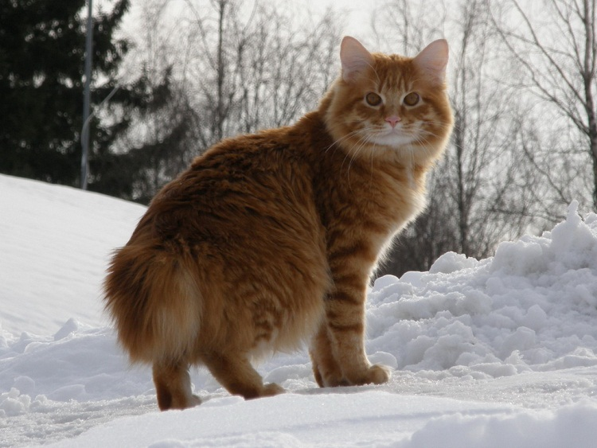
|
Кошачьи – это семейство млекопитающих отряда хищных. Из всех хищников они наиболее приспособлены к добыче пищи путём подкрадывания, подкарауливания, реже преследования. Кошачьи ведут главным образом сумеречный и ночной образ жизни. Они живут в одиночку или семьями; львы образуют прайды.
Тигр |
Каракал |
| Тигр – один из крупнейших хищников, является представителем рода Panthera. Значение слова «тигр» дословно переводится с древне-греческого языка как «быстрый, острый». Из известных девяти подвидов тигров сохранились лишь шесть: амурский тигр, тигр бенгальский, малайский, суматранский, индокитайский и южнокитайский тигр. Что касается яванского, балийского и каспийского тигров – эти подвиды были полностью истреблены человеком. |
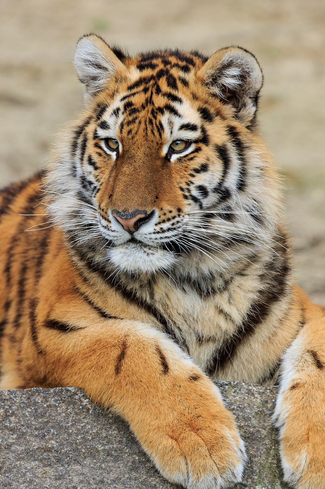 |
Каракал, или степная рысь - хищное млекопитающее семейства кошачьих. На протяжении многих лет каракала относили к рысям, с которыми он имеет внешнюю схожесть, однако позже его выделили в отдельный род из-за ряда генетических особенностей. Но несмотря на всё это, каракал стоит к рысям ближе, чем представители семейства кошачьих. |
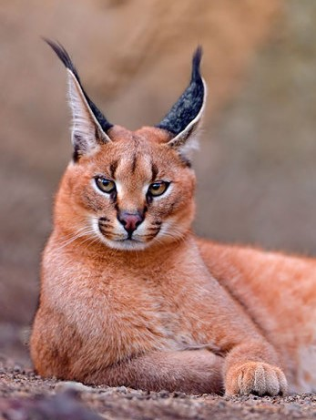 |
Лев |
Ирбис |
| Лев — хищный зверь, является одним из четырёх представителей рода пантер, относящегося к подсемейству больших кошек. Лев является второй по величине из ныне живыщих больших кошек, уступая только тигру. Вес львов-самцов иногда достигает 250 кг. Львы имеют очень характерный вид. Это представитель одного из немногих хищников, у которых ярко выражен половой деморфизм. Самцы значительно больше самок и обладают гривой. |
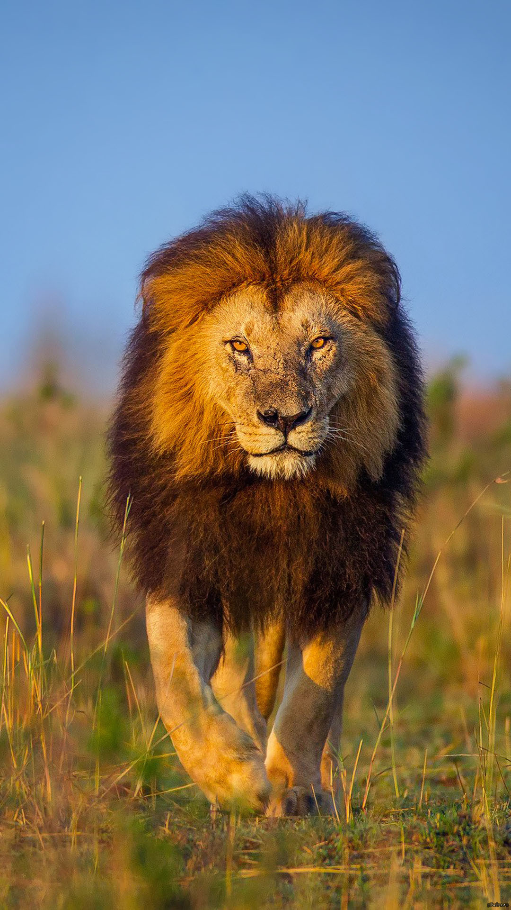 |
Ирбис (снежный барс или снежный леопард) — крупный хищник из семейства кошачьих, который обитает в горнах Центральной Азии. Ирбис имеет тонкое, длинное, гибкое тело, относительно короткие лапы, небольшую голову и очень длинный пушистый хвост. Его длина вместе с хвостом составляет 2-2,5 метра, а вес может достигать 55 кг. Окраска меха ирбиса светлая дымчато-серая, имеются кольцеобразные и сплошные тёмные пятна. |
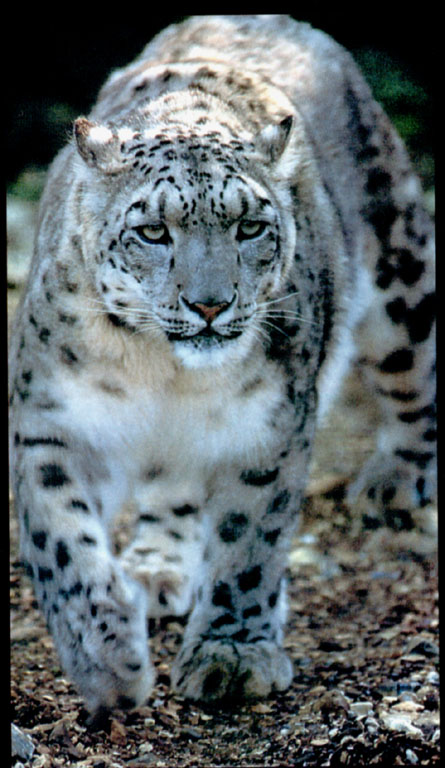 |
Сервал |
Манул |
| Сервал, или кустарниковая кошка – небольшой хищник из семейства кошачьих. Сервал – длинноногая, стройная кошка средних размеров. Длина тела сервала 90-135 см, высота в плечах достигает 40-65 см; вес сервала обычно 8-18 кг. В пропорции сервал имеет самые высокие ноги и большие уши среди кошачьих. |
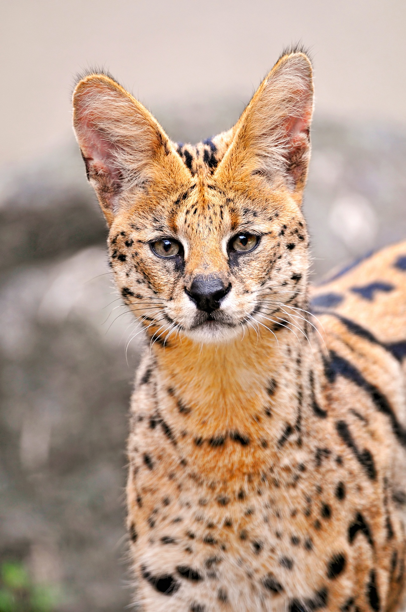 |
Манул – самая маленькая дикая кошка в России. Второе название этого животного - палласов кот, в честь ученого-биолога Петера Палласа, который впервые открыл его и описал в своих заметках. Отличается своеобразной внешностью: в целом похож на обычную кошку, но с плотным телом и очень густым светло-серым мехом с белыми кончиками волос. |
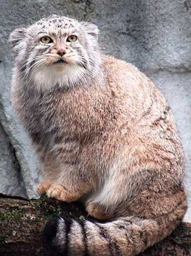 |
|